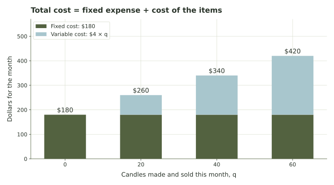
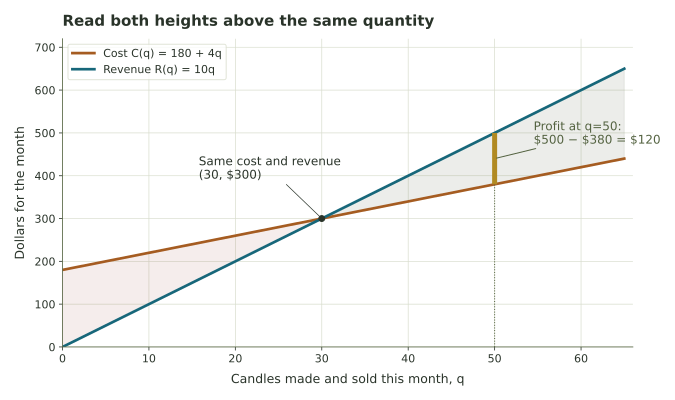
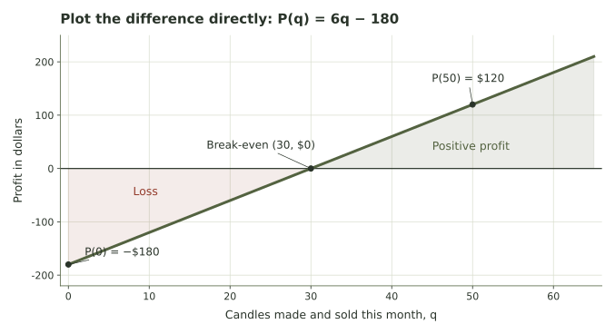
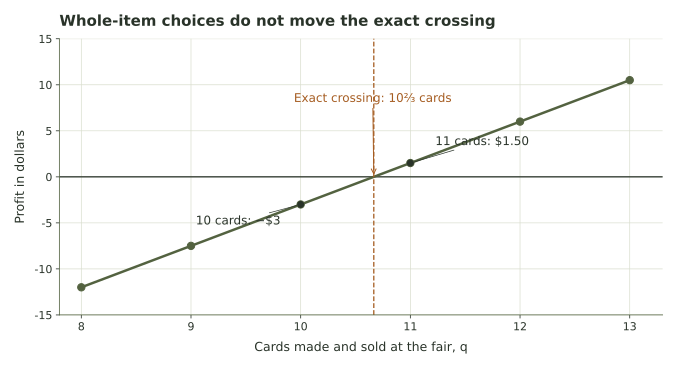
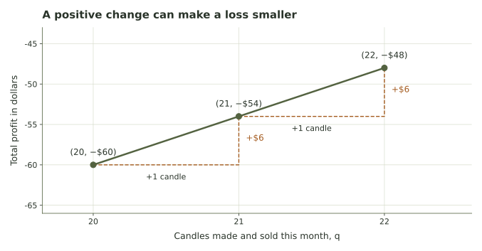
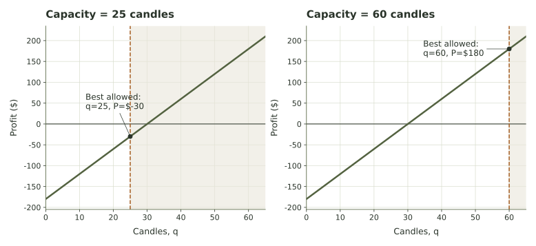
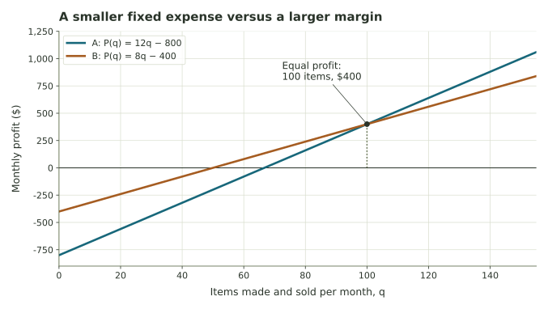
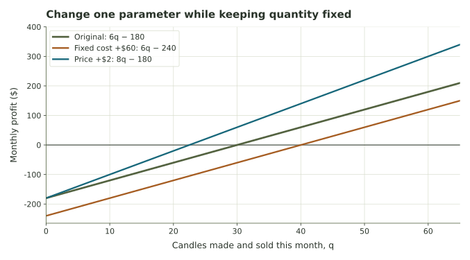
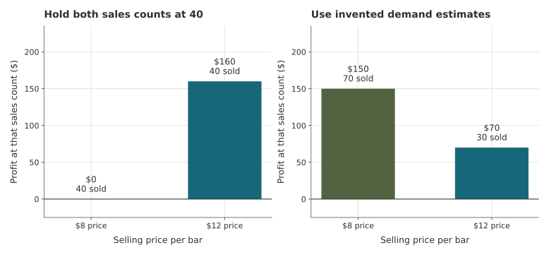

Costs, revenue, and profit
Build cost, revenue, and profit from a concrete decision, then compare available choices while keeping units and assumptions visible.
A seller's production decision
A candle maker is preparing for a monthly market. Paying for the stall and equipment costs $180. Each candle costs another $4 to make and sells for $10. Would selling 20 candles cover the expenses? What about 40? If the maker can sell at most 60, which quantity gives the most profit?
The stall fee is due regardless of sales. Each candle sold brings revenue, while each candle made incurs a production cost. Subtracting the total cost from revenue gives the profit for a particular sales plan.
Here, quantity replaces time as the input. We compare the cost, revenue, and profit of different quantities made and sold during the same month.
The candle example develops fixed and variable costs, break-even quantities, and profit per additional sale. A production limit then lets us compare feasible choices.
What does C(40) ask us to do?
Let \(q\) be the number of candles made and sold during one month. In our first model, every candle made is sold. The letter q stands for quantity. It is the decision variable: changing q describes a different plan.
A function is a rule that assigns one output to each allowed input. We use \(C(q)\) for total cost, \(R(q)\) for revenue, and \(P(q)\) for profit, all in dollars for that same month. The notation \(C(40)\) means “the cost when q is 40.” It does not mean C multiplied by 40.
Example · Substitute one choice into the rule
If \(C(q)=180+4q\), replace q with 40:
\[C(40)=180+4(40)=180+160=340.\]
The input is 40 candles; the output is $340 of modeled cost. The corresponding point on a cost graph is (40,340). At the same quantity, a different function can have a different output.
For candles, sensible quantities are nonnegative whole numbers: 0, 1, 2, and so on. A graph may draw a continuous line between them to make the pattern visible. For services sold by the hour, fractional quantities may make sense. The story determines which inputs are allowed.
If q is candles per month, what do R(25) and P(25) mean? Are their units candles or dollars?
Compare your reasoning
R(25) is revenue from selling 25 candles that month. P(25) is the profit for that same plan. Both outputs are dollars; 25 candles is the input.
Fixed cost is the starting amount; variable cost adds with quantity
A fixed cost does not change with the quantity in the period and range we are modeling. A stall fee is paid even if the stall sells nothing. A variable cost per unit is the amount added for each item made: wax, a jar, and a wick might total $4 per candle.
We write \(F\) for fixed cost and \(v\) for variable cost per item. The total variable cost is \(vq\), so
| Symbol | Meaning in the candle model | Units |
|---|---|---|
| q | Candles made and sold this month | candles |
| F = 180 | Stall and equipment cost for this month | dollars |
| v = 4 | Cost added per candle | dollars per candle |
| C(q) | Total modeled cost for the month | dollars |
The units tell us why the formula works: dollars per candle multiplied by candles gives dollars. We can add that result to the fixed cost because both are money amounts.

Example · Identify the parts before calculating
A food booth pays $300 for equipment and $50 for insurance. Ingredients cost $3.50 per meal, and packaging costs $0.50 per meal. Thus \(F=300+50=350\) dollars and \(v=3.50+0.50=4\) dollars per meal. Its model is \(C(q)=350+4q\), and \(C(200)=1150\) dollars.
“Fixed” is relative to the decision and time period. Renting a larger stall next month may change F. Today’s model holds F constant while we compare quantities for the chosen stall. Also, zero production in this model still incurs the fixed expense; not opening at all may be a different option with different costs.
A bakery pays $250 per week plus $1.50 per loaf. Write C(q), then find C(100).
Compare your reasoning
C(q)=250+1.5q. At 100 loaves, cost is 250+150=$400. The $250 remains a fixed cost as the number of loaves changes.
Revenue is not profit
Revenue is money received from sales. At a constant price \(p\) dollars per item, selling q items gives \(R(q)=pq\). For candles at $10 each, \(R(q)=10q\). At 40 sales, revenue is $400, but that money must also cover the $340 cost.
Profit is revenue minus the costs included in the model:
The parentheses matter: subtract both the variable cost and the fixed cost. For the candles, \(P(q)=10q-(180+4q)=6q-180\). A negative result means a loss relative to the modeled expenses.
| Candles q | Cost C(q) | Revenue R(q) | Profit P(q) |
|---|---|---|---|
| 0 | $180 | $0 | −$180 |
| 20 | $260 | $200 | −$60 |
| 30 | $300 | $300 | $0 |
| 40 | $340 | $400 | $60 |
| 60 | $420 | $600 | $180 |
At 20 candles, money still comes in: revenue is $200. The loss of $60 means that revenue falls $60 short of the $260 cost. Customers paid $200, while the modeled costs were $260. At 40 candles, the $60 profit is what remains after the modeled costs.
What is included in “profit”?
If the model leaves out the maker’s time, taxes, or delivery, the result has not accounted for those expenses. State what the cost model includes before treating the result as money available to spend. Our examples compare simplified plans, not complete business accounts.
At 50 candles, find C(50), R(50), and P(50). Which result is money received before costs?
Compare your reasoning
C(50)=180+4(50)=$380. R(50)=10(50)=$500. P(50)=500−380=$120. Revenue, $500, is money received before subtracting costs.
Profit is a vertical difference at the same quantity
The horizontal axis below measures candles for the month. The vertical axis measures dollars. To compare revenue and cost at 50 candles, stay above q=50 and read both heights. Revenue is $500 and cost is $380; their vertical difference is $120.

The cost line starts at $180 when q=0; this is its vertical intercept. Revenue starts at zero. For every one-unit step to the right, cost rises $4 and revenue rises $10. Those changes are the slopes. A steeper revenue line eventually catches a cost line that started higher.

Below the profit graph’s horizontal zero line are losses; above it are positive profits. A rising profit graph shows improvement. Profit becomes positive after the graph crosses the horizontal zero line. From 0 to 20 candles, the loss shrinks, but the profit remains negative.
At q=20, the revenue graph is higher than at q=0. Does that prove the plan earns a profit?
Compare your reasoning
No. R(20)=$200 but C(20)=$260. Profit is −$60. A rise in revenue alone does not establish that revenue exceeds cost.
Exact break-even and the first whole item avoiding a loss
A plan breaks even when revenue equals cost, so profit is exactly zero. For the candle model, solve \(6q-180=0\): add 180, then divide by 6, giving q=30 candles. This is an exact break-even quantity.
In general, if \(p>v\), each sale contributes the positive amount \(p-v\) toward the fixed expense. Setting profit to zero gives
The star simply labels the threshold. Units provide another check: dollars divided by dollars per item gives items.
Example · A fractional threshold does not describe a whole sale
At a craft fair, cards cost $1.50 to make, sell for $6, and require a $48 table fee. Then \(P(q)=4.5q-48\) and \(q^*=48/4.5=10\tfrac23\). This is the exact crossing of the continuous lines.
At 10 cards, profit is −$3. At 11, profit is $1.50. Thus 11 is the smallest whole number avoiding a loss, but 11 is not an exact break-even sale count. No whole number of cards gives profit exactly zero in this model.

For an exact whole-number threshold such as 30 candles, 30 avoids a loss and 31 is the first whole count with strictly positive profit. For a fractional threshold such as \(10\tfrac23\), 11 does both. Read whether the question asks for exact equality, nonnegative profit, or positive profit.
Before dividing, check the margin
If F is positive and \(p=v\), every sale only covers its own variable cost; the fixed expense remains uncovered. If \(p<v\), each sale adds to the loss. Neither case has a nonnegative break-even quantity. With F=0, q=0 breaks even; if p=v as well, every quantity breaks even.
A food truck has F=$350, v=$4, p=$8. Find the exact threshold and the first whole-meal count avoiding a loss.
Compare your reasoning
P(q)=4q−350, so the exact crossing is q*=87.5. At 87 meals P=−$2; at 88 P=$2. Thus 88 is the first whole-meal count avoiding a loss, not an exact zero-profit count.
One more sale changes profit by the margin
Marginal asks what changes when quantity increases by one. For our linear models, one additional candle raises cost by $4, revenue by $10, and profit by $6. These are marginal cost, marginal revenue, and marginal profit.
This difference is the same before and after break-even. Going from 20 to 21 candles changes profit from −$60 to −$54: an increase of $6, while the business still has a loss. Going from 40 to 41 changes it from $60 to $66.

This is Week 1’s additive recursion in a new setting: start at \(P(0)=-180\), then repeatedly add 6. Cost starts at 180 and adds 4; revenue starts at 0 and adds 10. The input counts items rather than elapsed years.
Example · A larger change
Increasing sales from 40 to 55 candles adds 15 sales, so profit increases by \(15(6)=90\) dollars. Check the totals: \(P(40)=60\) and \(P(55)=150\); their difference is $90.
The margin $6 per candle is also called contribution per unit. It is not the average total profit per candle: at 40 candles, that average is \(60/40=1.50\) dollars because the fixed cost still affects the total. In a nonlinear model, the extra profit from one more item may vary; constant margin is an assumption of this week’s simple model.
A print shop has C(q)=500+2q and R(q)=6q. Find the marginal profit and compare P(124), P(125), and P(126).
Compare your reasoning
Marginal profit is 6−2=$4 per print. P(q)=4q−500 gives −$4, $0, and $4. Each additional print changes profit by $4.
Break-even is a threshold; an optimum is a best available outcome
An objective function assigns an outcome to each choice. To maximize means to select the largest allowed value; to minimize means to select the smallest. Here we often maximize P(q), but cost, access, time, or waste could be other objectives.
The candle profit \(6q-180\) rises with every sale. If the maker can produce and sell at most 60 candles this month, the allowed whole quantities are 0 through 60. The largest profit is \(P(60)=180\) dollars. Selling 30 breaks even, but 60 maximizes modeled profit within that limit.

Without an upper limit or a demand model, a positive-margin linear profit has no largest value: choosing a larger q always gives a larger prediction. That is a sign that the model needs more context, not a recommendation to produce infinitely many candles.
On a fixed interval from 0 to a capacity, positive margin favors the largest quantity; negative margin favors zero; zero margin makes every quantity tie. These conclusions assume the fixed expense applies to all choices, including q=0. A separate “do not open” option may avoid that expense and needs its own comparison.
Example · A table compares only its listed options
Suppose a model predicts profits $90, $140, $150, and $120 for quantities 30, 40, 50, and 60. Quantity 50 is best among those four options. The table alone does not tell us the result at 49, 51, or every other possible quantity. A best-of-list claim needs fewer assumptions than a best-over-all-choices claim.
If the candle capacity is 24, what plan maximizes P(q)=6q−180, and is it profitable?
Compare your reasoning
Choose q=24, giving P(24)=144−180=−$36. It is the least loss among the allowed quantities 0 through 24 under the stated fixed-cost model. “Best” does not automatically mean positive profit.
Lower overhead and larger margin can favor different volumes
Two shops sell the same product for $20. Shop A has $800 of fixed cost and $8 per item of variable cost. Shop B has $400 of fixed cost and $12 per item. Their profit functions are \(P_A(q)=12q-800\) and \(P_B(q)=8q-400\).
At q=60, A loses $80 while B earns $80. At q=140, A earns $880 while B earns $720. B’s smaller fixed expense helps at low volume; A’s larger margin helps at high volume.
Example · Find the crossover
Set the two profits equal: \(12q-800=8q-400\). Subtract 8q and add 800 to get \(4q=400\), hence q=100. Both profits are $400 there.
This equality is a crossover between two plans. It is not either shop’s break-even point, which would require its own profit to equal zero. B breaks even at 50; A’s continuous threshold is \(66\tfrac23\).

A parameter change also has a recognizable effect. Increasing F shifts the cost line up and profit line down without changing their slopes. Increasing v lowers the margin. Increasing p raises the margin when other assumptions and the number sold stay fixed. These statements compare model outputs; they do not establish what demand will do.

A business has P(q)=7q−420. Can you recover its fixed cost and margin? Can you recover its selling price and variable cost separately?
Compare your reasoning
F=$420 and p−v=$7 per item. The separate p and v are not determined: p=12, v=5 and p=15, v=8 both give the same margin. More data are needed to distinguish them.
A higher price per item does not tell us how many items will sell
A soap seller has F=$200 and v=$3. At a price of $8 the margin is $5; at $12 it is $9. If both plans sell exactly 40 bars, their profits are $0 and $160. That comparison answers a precise conditional question: what if the quantities are the same?
Now suppose a separate, invented demand estimate predicts 70 sales at $8 but only 30 at $12. The profits become \(5(70)-200=150\) dollars and \(9(30)-200=70\) dollars. The lower-price plan now has the larger modeled profit.

If price depends on quantity, write it as \(p(q)\), so \(R(q)=q\,p(q)\). Revenue need not remain a straight line. We do not need a new formula to recognize the issue: changing price can change the number sold, and that relationship requires observations or a stated hypothetical model.
A smaller break-even threshold is measured in items, not in days. It does not mean a business will reach that threshold sooner in time. That would require information about the rate of sales. Likewise, a larger margin alone cannot determine total profit without a sales quantity and fixed cost.
An $8 plan earns $150 by selling 70 bars. At a $12 price with margin $9 and fixed cost $200, what whole-bar sales count would first exceed that profit?
Compare your reasoning
Solve 9q−200>150, giving q>350/9, about 38.889. At least 39 bars are needed to exceed $150. At 39 the profit is $151; the demand estimate of 30 would not be enough.
A useful recommendation names its assumptions
For the original candle model, a complete conclusion is: “If every candle made can be sold for $10, costs stay at $180 plus $4 per candle, and capacity is 60 this month, choose 60 candles to maximize modeled profit at $180.” The quantity and the objective value are different parts of the answer.
Then identify what could change that conclusion. Unsold inventory separates production from sales. Limited labor can cap production. A delivery charge can add a new expense. A community group might accept a lower surplus to keep prices affordable. The arithmetic can compare outcomes after we state the goal and the available choices.
Example · When production and sales are different
Suppose 60 candles are made but only 40 sell. The cost is \(180+4(60)=420\) dollars, while revenue is \(10(40)=400\) dollars. Profit is −$20. Substituting q=40 into the original profit rule would instead give $60, because that rule assumes only 40 were made.
When production and sales differ, let \(n\) be candles made and \(s\) candles sold, with \(0\le s\le n\). Profit becomes \(P=10s-4n-180\), reflecting both quantities.
- Name the choice, time period, and units.
- State the goal and allowed quantities.
- Build the cost and revenue rules, then subtract.
- Check a threshold or compare the available choices.
- Report a plan, its outcome, and an assumption worth checking.
From Week 7 to Week 8
Week 8 will put two production quantities on a coordinate plane. Resource limits will define the feasible region, and an objective will give each feasible plan a score. The contribution p−v developed here becomes the coefficient attached to each product. If a fixed expense is the same for all plans, subtracting it changes profit values without changing which plan is best.
Continue with the guided laboratory, apply the model to a food stand, and examine competing goals for an AI tutoring service. The pricing discussion asks you to communicate a comparison and its limits.